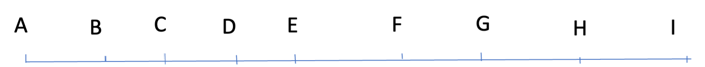
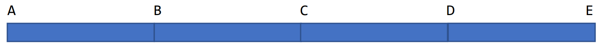
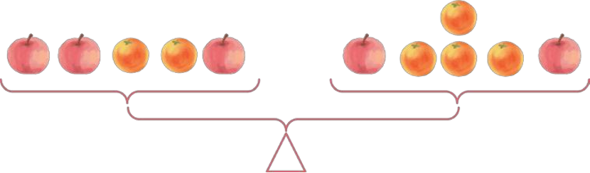

📜第 1 題
觀察下面的數列，分別找出各自的排列規律，並填上合適的數：
（1）3，6，9，12，（ ），（ ）。
（2）17，13，9，（ ），1。
（3）5，15，45，（ ），405。
（4）256，64，（ ），4，1。
💡破題提示
從左往右觀察相鄰的兩個數字，看看它們是加、減、乘還是除以了相同的數？
看第一小題解法 👆
🕵️♂️第 (1) 題：方法一 (加法)
前一個數 + 3 = 後一個數。
12 + 3 = 15，15 + 3 = 18。
看方法二 👆
🚀第 (1) 題：方法二 (乘法)
第幾個數就是幾的 3 倍。
第5個：5 × 3 = 15，第6個：6 × 3 = 18。
看其他題解答 👆
🏆第 (2)~(4) 題解答
（2）規律是「- 4」。9 - 4 = 5。
（3）規律是「× 3」。45 × 3 = 135。
（4）規律是「÷ 4」。64 ÷ 4 = 16。
📜第 2 題
觀察下面數列，找出規律並填空：
28，24，（ ），16，12，（ ）
💡破題提示
這組數字越來越小，試試看相減！
看方法一 👆
🕵️♂️方法一：相鄰相減
前一個數 - 4 = 後一個數。
24 - 4 = 20，12 - 4 = 8。
看方法二 👆
🚀方法二：倍數遞減
每個數都是從 32 開始，依次減去 4 的倍數。
32 - (3 × 4) = 20，32 - (6 × 4) = 8。
看答案 👆
🏆最終解答
✅ 答：括號中分別填入 20 和 8。
📜第 1 題
一列往返于珠海和上海之間的火車沿途要停靠 7 站（加上起訖共 9 站），鐵路部門要為這趟車準備多少種車票？

💡破題提示
把每個站點看成線段上的端點，這其實是一個「數線段」的問題，而且要考慮去程和回程喔！
看方法一 👆
🕵️♂️方法一：按基本線段分類
由 1 條基本線段組成的有 8 條，由 2 條組成的有 7 條... 一直到由 8 條組成的 1 條。
單程線段總數 = 8+7+6+5+4+3+2+1 = 36（條）。
看方法二 👆
🚀方法二：按左端點分類
以 A 為左端點有 8 條，以 B 為左端點有 7 條...
總數一樣是 8+7+6+5+4+3+2+1 = 36（條）。
看方法三 👆
🧠方法三：乘法原理公式
9 個點每個都能和其他 8 點相連，但每條線會重複計算一次，所以除以 2。
9 × (9 - 1) ÷ 2 = 36（條）。
看最終答案 👆
🏆最終解答
單程有 36 種，但因為往返車票不同（去程和回程），所以需要：
36 × 2 = 72（種）。
✅ 答：要準備 72 種車票。
📜第 2 題
圖中（A—B—C—D—E，共 4 個相連的小長方形）一共有多少個長方形？

💡破題提示
數長方形的方法和數線段是一樣的！分類有序數，不重複、不遺漏。
看解析 👆
🕵️♂️分析過程
先數底邊上的線段數：
1 小段合成：4 條
2 段合成：3 條
3 段合成：2 條
4 段合成：1 條
總線段數：4+3+2+1 = 10（條）。
看答案 👆
🏆最終解答
長方形個數 = 底邊上線段總條數。
✅ 答：圖中一共有 10 個長方形。
📜第 1 題
樂樂買了 165 元上衣、178 元褲子、835 元鞋子、69 元帽子和 22 元襪子。快速算出一共花了多少錢？
💡破題提示
不要從左到右死算！觀察數字的尾數，找找誰和誰可以「湊整」。
看解析 👆
🕵️♂️巧算步驟
165 和 835 可以湊成 1000；178 和 22 可以湊成 200。
(165 + 835) + (178 + 22) + 69
= 1000 + 200 + 69
看答案 👆
🏆最終解答
✅ 答：一共花了 1269 元。
📜第 2 題
計算： 567 − 123 − 77
💡破題提示
減法性質巧算口訣：連續減去兩個數，等於減去這兩個數的「和」！
看解析 👆
🕵️♂️合併減數
觀察發現 123 + 77 剛好湊成整百 (200)，合併起來減更簡單！
567 − (123 + 77)
= 567 − 200
看答案 👆
🏆最終解答
✅ 答：結果為 367。
📜第 1 題
計算：101 + 102 + 103 + 104 + 105 + 106 + 107 + 108 + 109 + 110
💡破題提示
這是一個等差數列求和！可以使用公式：(首項 + 末項) × 項數 ÷ 2。
代入公式 👆
🕵️♂️計算過程
首項 = 101，末項 = 110，共有 10 項。
(101 + 110) × 10 ÷ 2
= 211 × 10 ÷ 2
看答案 👆
🏆最終解答
✅ 答：總和為 1055。
📜第 2 題
工地上有一堆鋼管，最高層 20 根，最底層 90 根，中間還有 9 層，每層比上一層多 7 根。這堆鋼管共有幾根？
💡破題提示
一樣是等差數列！先弄清楚「項數」(總共有幾層) 是多少？
看解析 👆
🕵️♂️找出項數與代入
頂層1層 + 中間9層 + 底層1層 = 11 層（項數）。
或者利用公式：(90 - 20) ÷ 7 + 1 = 11（項）。
求和：(20 + 90) × 11 ÷ 2 = 110 × 11 ÷ 2。
看答案 👆
🏆最終解答
✅ 答：這堆鋼管共有 605 根。
📜第 1 題
A班買 5 箱玩具，每箱 6 個，共 600 元。B班有 960 元，若包裝改為每箱 8 個，B班可以買幾箱？
💡破題提示
「歸一」的意思就是先求出「1個」玩具要多少錢！
看方法一 👆
🕵️♂️方法一：逐步除法
先算1箱多少錢：600 ÷ 5 = 120 (元)。
再算1個多少錢：120 ÷ 6 = 20 (元)。
B班新包裝1箱要：20 × 8 = 160 (元)。
960 ÷ 160 = 6 (箱)。
看方法二 👆
🚀方法二：總數除法
先算A班共買幾個：6 × 5 = 30 (個)。
算1個多少錢：600 ÷ 30 = 20 (元)。
一樣得出 B班能買 960 ÷ (20 × 8) = 6 (箱)。
看答案 👆
🏆最終解答
✅ 答：B班可以購得 6 箱這樣的玩具。
📜第 2 題
工廠 6 台機器 3 小時能加工 1980 個零件。若每台效率提高 2 倍，8 台機器加工 7920 個零件需要幾小時？
💡破題提示
先求出最核心的數據：「1台」機器「1小時」原本能加工幾個零件？
看解析 👆
🕵️♂️歸一計算與代入
1台機器1小時：1980 ÷ 3 ÷ 6 = 110 (個)。
效率變2倍後，8台機器1小時產量：110 × 2 × 8 = 1760 (個)。
需要時間：7920 ÷ 1760。
看答案 👆
🏆最終解答
✅ 答：需要用 4.5 小時。
📜第 1 題
圖書館有漫畫書和小說共 2400 本，小說是漫畫書的 3 倍。兩種書各有幾本？
💡破題提示
把漫畫書看作「1 份」，小說就是「3 份」，總共是幾份呢？
看解析 👆
🕵️♂️算出「一份」
總份數 = 1 + 3 = 4 (份)。
漫畫書 (1份) = 2400 ÷ 4 = 600 (本)。
小說 (3份) = 600 × 3 = 1800 (本)。
看答案 👆
🏆最終解答
✅ 答：漫畫書有 600 本，小說有 1800 本。
📜第 2 題
三名工人共挖 60 米排水溝。乙再多挖 2 米就是甲的 2 倍；甲比丙少挖 6 米。三人各挖了幾米？
💡破題提示
把甲看成「1 倍」。如果我們從總數 60 米中調整一下，讓乙剛好是 2 倍，丙剛好和甲一樣長，總數會變成多少？
看解析 👆
🕵️♂️調整總數找甲
讓丙減 6 米 (變 1 倍)，讓乙加 2 米 (變 2 倍)。
調整後總長 = 60 - 6 + 2 = 56 (米)。此時總倍數是 1(甲) + 2(乙) + 1(丙) = 4 倍。
甲 = 56 ÷ 4 = 14 (米)。
乙 = 14 × 2 - 2 = 26 (米)。
丙 = 14 + 6 = 20 (米)。
看答案 👆
🏆最終解答
✅ 答：甲挖 14 米，乙挖 26 米，丙挖 20 米。
📜第 1 題
一條彩帶剪去一半後，再剪去剩下的一半，還剩下 5 米。原來長多少米？
💡破題提示
利用「倒推法」，像看電影倒帶一樣，從剩下的 5 米一步一步乘回去！
看解析 👆
🕵️♂️逐步還原
第二次剪之前：剩下的 5 米 × 2 = 10 (米)。
第一次剪之前：10 米 × 2 = 20 (米)。
看答案 👆
🏆最終解答
✅ 答：這條彩帶原來長 20 米。
📜第 2 題
樂兒算減法時，錯把被減數十位的 5 和個位的 9 看顛倒了，得到的差是 58。正確的差是多少？
💡破題提示
看顛倒的意思是把「59」看成了「95」。你可以選擇修正「差的變化量」，或先求出真正的減數！
看方法一 👆
🕵️♂️方法一：修正差額
十位 5 變 9，差多了 40；個位 9 變 5，差少了 4。
所以正確的差應該要把多算的減掉、少算的加回來：
58 - 40 + 4 = 22。
看方法二 👆
🚀方法二：先找減數
錯誤算式：95 - 減數 = 58，得出減數 = 95 - 58 = 37。
正確算式：59 - 37 = 22。
看答案 👆
🏆最終解答
✅ 答：正確的差是 22。
📜第 1 題
市集規定：1 頭豬換 3 隻羊，1 頭牛換 5 頭豬。那麼 1 頭牛可以換多少隻羊？
💡破題提示
把「豬」當作中間的橋樑，把牛換成豬，再把豬換成羊！
看解析 👆
🕵️♂️代換過程
1 頭牛 = 5 頭豬。
因為 1 頭豬 = 3 隻羊，所以 5 頭豬就是 5 個 3 隻羊：3 × 5 = 15。
看答案 👆
🏆最終解答
✅ 答：1 頭牛可以換 15 隻羊。
📜第 2 題
觀察天平，已知一個橘子 40 克，那麼一個蘋果多少克？

💡破題提示
天平兩邊重量相等。仔細比較左盤和右盤，兩邊都有的水果可以互相抵消喔！
看解析 👆
🕵️♂️觀察抵消
右盤比左盤少了 1 個蘋果，多了 2 個橘子，而天平保持平衡。說明 1 個蘋果的重量 = 2 個橘子。
1 個蘋果 = 40 × 2 = 80 (克)。
看答案 👆
🏆最終解答
✅ 答：一個蘋果重 80 克。
📜第 1 題
一條長 900 米的公路，兩邊每隔 20 米種一棵樹，起點與終點是站牌不種樹，一共要種多少棵樹？
💡破題提示
這是「兩端都不種樹」的類型，樹的數量會比段數少 1。別忘了馬路有「兩邊」！
看解析 👆
🕵️♂️計算段數與棵數
段數 = 900 ÷ 20 = 45 (段)。
一邊種的樹 = 45 - 1 = 44 (棵)。
兩邊一共種 = 44 × 2 = 88 (棵)。
看答案 👆
🏆最終解答
✅ 答：一共要種 88 棵樹。
📜第 2 題
子安步行到 6 樓，要走 80 級臺階。如果他要步行到 8 樓，要走多少級臺階？
💡破題提示
爬樓梯其實就是「兩端都種樹」的模型！到 6 樓實際上是爬了幾個「樓層間隔」呢？
看解析 👆
🕵️♂️找出單層臺階數
1 樓到 6 樓有 6 - 1 = 5 個間隔 (段數)。
每層臺階 = 80 ÷ 5 = 16 (級)。
到 8 樓有 8 - 1 = 7 個間隔。
16 × 7 = 112 (級)。
看答案 👆
🏆最終解答
✅ 答：要走 112 級臺階。